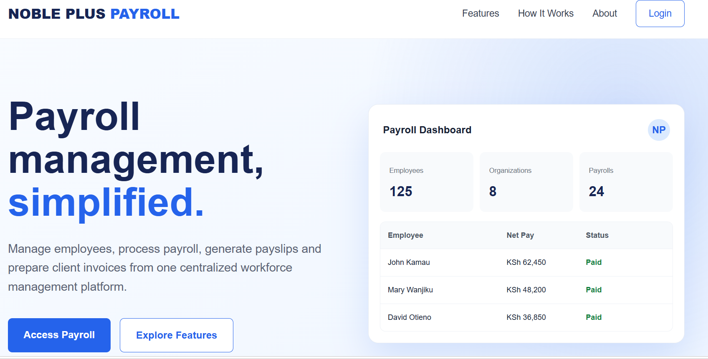

Workforce254 PayrollAdd screenshot:
screenshots/payroll-dashboard.png
Featured · Business system
Workforce254 — Payroll Management
A payroll management system focused on employee records, payroll periods, salary calculations, and organized workforce data.